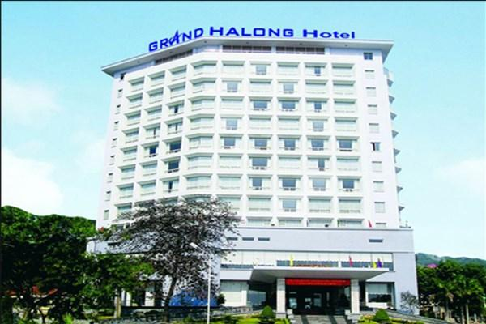
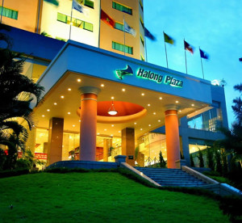
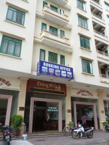
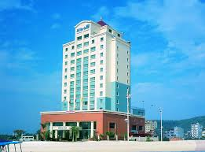
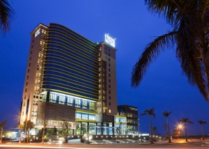

Khách sạn Hạ Long
Hạ Long là 1 trung tâm du lịch lớn tại miền bắc có nhất nhiều nhà hàng khách sạn từ cơ bản cho đến cao cấp đều có tại Hạ Long. Công ty du lịch Khát Vọng Việt tổ chức tour Hạ Long chuyên nghiệp và uy tín luôn lựa chọn những khách sạn tốt nhất tại Hạ Long với chi phí tiết kiệm nhất để khách hàng luôn hài lòng với dịch vụ của công ty và có được ấn tượng thật đẹp mỗi khi đến với Hạ Long.
website: https://dulichhalongquangninh.com/
Khách sạn Grand Hạ Long
Khách sạn Grand Hạ Long nằm tọa lạc tại đường Hạ Long, Bãi Cháy, thành phố Hạ Long tỉnh Quảng Ninh. Đây là một trong những khách sạn Hạ Long nổi tiếng có bề...
Hạ Long PLaza
Khách sạn Hạ Long Plaza nằm ở khu du lịch Bãi Cháy là một khách sạn 4 sao đầu tiên ở Quảng Ninh. Đây là nơi có vị trí thuận lợi rất...
Khách sạn Thống Nhất 2
Khách sạn thống nhất được xây dựng trên đường Hạ Long, ở vị trí trung tâm của khu du lịch bãi cháy, va đối diện với bãi biển Hạ Long
Khách sạn Mithrin Hạ Long
Nơi đây có vị trí khá thuận lợi, du khách chỉ cần đi bộ khoảng một vài phút là đến đảo cá heo, và mất thêm khoảng 10 phút lái xe đi đến khu công nghiệp cái Lân.
Khách sạn Royal Lotus Hạ Long
Khách sạn Royal Lotus Hạ Long tọa lạc ngay bên bờ vịnh Hạ Long, với những tiện nghi hiện đại, đạt tiêu chuẩn 4 sao quốc tế. Khách sạn là sự kết hợp hài hòa giữa phong cách Pháp cổ điển và hiện đại cùng hệ thống phòng đa dạng, nhiều tiện ích như: phòng tiệc, phòng hội nghị, quán bar, hệ thống nhà hàng, phòng tập thể hình, bể bơi trong nhà có thể đáp ứng nhu cầu đa dạng của du khách khi nghỉ dưỡng tại nơi này. Nếu dự định du lịch vịnh Hạ Long, bạn có thể tham khảo thông tin về khách sạn này tại đây.